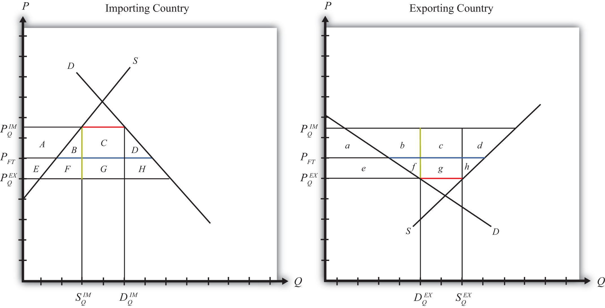

Suppose for simplicity that there are only two trading countries: one importing country and one exporting country. The supply and demand curves for the two countries are shown in Figure 7.25 "Welfare Effects of a Quota: Large Country Case". PFT is the free trade equilibrium price. At that price, the excess demand by the importing country equals the excess supply by the exporter.
Figure 7.25 Welfare Effects of a Quota: Large Country Case
The free trade quantity of imports and exports is shown as the blue line segment on each country’s graph (the horizontal distance between the supply and demand curves at the free trade price). Suppose the large importing country implements a binding quota set equal to the length of the red line segment (the horizontal distance between the supply and demand curves at either the higher import price or the lower export price). When a new equilibrium is reached, the price in the importing country will rise until import demand is equal to the quota level. The price in the exporting country will fall until export supply is equal to the quota level.
Table 7.5 "Welfare Effects of an Import Quota" provides a summary of the direction and magnitude of the welfare effects to producers, consumers, and the governments in the importing and exporting countries. The aggregate national welfare effects and the world welfare effects are also shown.
Table 7.5 Welfare Effects of an Import Quota
| Importing Country | Exporting Country | |
|---|---|---|
| Consumer Surplus | − (A + B + C + D) | + e |
| Producer Surplus | + A | − (e + f + g +h) |
| Quota Rents | + (C + G) | 0 |
| National Welfare | + G − (B + D) | − (f + g + h) |
| World Welfare | − (B + D) − (f + h) |
Refer to Table 7.5 "Welfare Effects of an Import Quota" and Figure 7.25 "Welfare Effects of a Quota: Large Country Case" to see how the magnitude of the changes is represented.
Import quota effects on the importing country’s consumers. Consumers of the product in the importing country suffer a reduction in well-being as a result of the quota. The increase in the domestic price of both imported goods and the domestic substitutes reduces the amount of consumer surplus in the market.
Import quota effects on the importing country’s producers. Producers in the importing country experience an increase in well-being as a result of the quota. The increase in the price of their product on the domestic market increases producer surplus in the industry. The price increases also induce an increase in the output of existing firms (and perhaps the addition of new firms), an increase in employment, and an increase in profit, payments, or both to fixed costs.
Import quota effects on the quota rents. Who receives the quota rents depends on how the government administers the quota.
Import quota effects on the importing country. The aggregate welfare effect for the country is found by summing the gains and losses to consumers, producers, and the recipients of the quota rents. Assume that the quota rent recipients are domestic residents. The net effect consists of three components: a positive terms of trade effect (G), a negative production distortion (B), and a negative consumption distortion (D).
Because there are both positive and negative elements, the net national welfare effect can be either positive or negative. The interesting result, however, is that it can be positive. This means that a quota implemented by a large importing country may raise national welfare.
Generally speaking, the following are true:
However, it is also important to note that not everyone’s welfare rises when there is an increase in national welfare. Instead, there is a redistribution of income. Producers of the product and recipients of the quota rents will benefit, but consumers will lose. A national welfare increase, then, means that the sum of the gains exceeds the sum of the losses across all individuals in the economy. Economists generally argue that, in this case, compensation from winners to losers can potentially alleviate the redistribution problem.
Import quota effects on the exporting country’s consumers. Consumers of the product in the exporting country experience an increase in well-being as a result of the quota. The decrease in their domestic price raises the amount of consumer surplus in the market.
Import quota effects on the exporting country’s producers. Producers in the exporting country experience a decrease in well-being as a result of the quota. The decrease in the price of their product in their own market decreases producer surplus in the industry. The price decline also induces a decrease in output, a decrease in employment, and a decrease in profit, payments, or both to fixed costs.
Import quota effects on the quota rents. There are no quota rent effects on the exporting country as a result of the importer’s quota unless the importing government gives away the quota rights to foreigners. Only in this case would the rents accrue to someone in the exporting country.
Import quota effects on the exporting country. The aggregate welfare effect for the country is found by summing the gains and losses to consumers and producers. The net effect consists of three components: a negative terms of trade effect (g), a negative consumption distortion (f), and a negative production distortion (h).
Since all three components are negative, the importer’s tariff must result in a reduction in national welfare for the exporting country. However, it is important to note that a redistribution of income occurs—that is, some groups gain while others lose. In this case, the sum of the losses exceeds the sum of the gains.
Import quota effects on world welfare. The effect on world welfare is found by summing the national welfare effects on the importing and exporting countries. By noting that the terms of trade gain to the importer is equal to the terms of trade loss to the exporter, the world welfare effect reduces to four components: the importer’s negative production distortion (B), the importer’s negative consumption distortion (D), the exporter’s negative consumption distortion (f), and the exporter’s negative production distortion (h). Since each of these is negative, the world welfare effect of the import quota is negative. The sum of the losses in the world exceeds the sum of the gains. In other words, we can say that an import quota results in a reduction in world production and consumption efficiency.
Consider the following trade policy action (applied by the domestic country) listed at the top of the second column in the table below. In the empty boxes, use the following notation to indicate the effect of the policy on the variables listed in the first column:
+ the variable increases
− the variable decreases
0 the variable does not change
A the variable change is ambiguous (i.e., it may rise, it may fall)
Use a partial equilibrium model to determine the answers, and assume that the shapes of the supply and demand curves are “normal.” Assume that the policy does not begin with, or result in, prohibitive trade policies. Also assume that the policy does not correct for market imperfections or distortions.
For example, an import quota applied by a large country will cause an increase in the domestic price of the import good; therefore a + is placed in the first box of the table.
Table 7.6 Import Quota Effects
| An Import Quota by a Large Country Initially in Free Trade | |
|---|---|
| Domestic Market Price | + |
| Domestic Industry Employment | |
| Domestic Consumer Welfare | |
| Domestic Producer Welfare | |
| Domestic Government Revenue | |
| Domestic National Welfare | |
| Foreign Price | |
| Foreign Consumer Welfare | |
| Foreign Producer Welfare | |
| Foreign National Welfare |
Suppose there are two large countries, the United States and China. Assume that both countries produce and consume clothing. The United States imports clothing from China. Consider the trade policy action listed at the top of the second column in the table below. In the boxes, indicate the effect of the policy on the variables listed in the first column. Use a partial equilibrium, perfect competition model to determine the answers. You do not need to show your work. Use the following notation:
+ the variable increases
− the variable decreases
0 the variable does not change
A the variable change is ambiguous (i.e., it may rise, it may fall)
Table 7.7 Import Quota Elimination Effects
| I | |
|---|---|
| Elimination of a U.S. Import Quota on Clothing Imports | |
| U.S. Domestic Consumer Welfare | |
| U.S. Domestic Producer Welfare | |
| U.S. National Welfare | |
| Chinese Producer Welfare | |
| Chinese Consumer Welfare | |
| Chinese National Welfare |